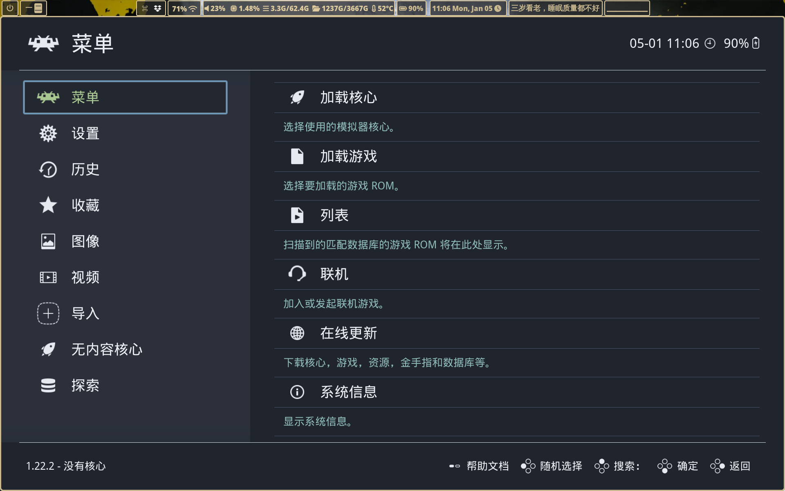
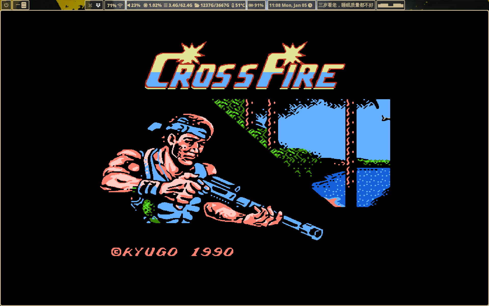
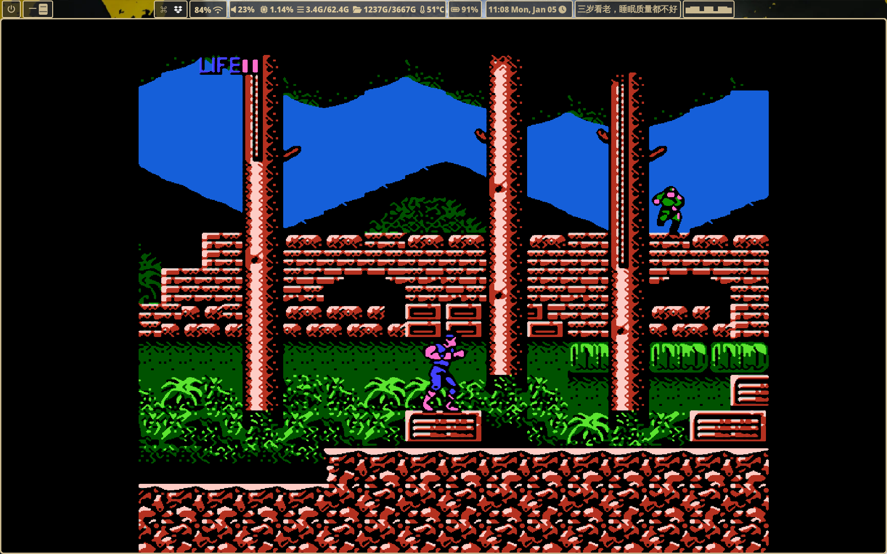
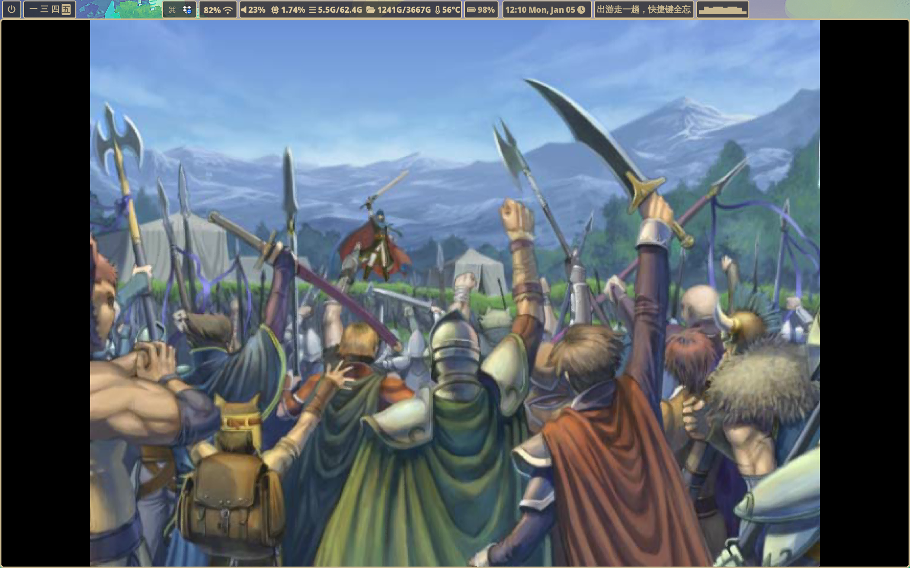
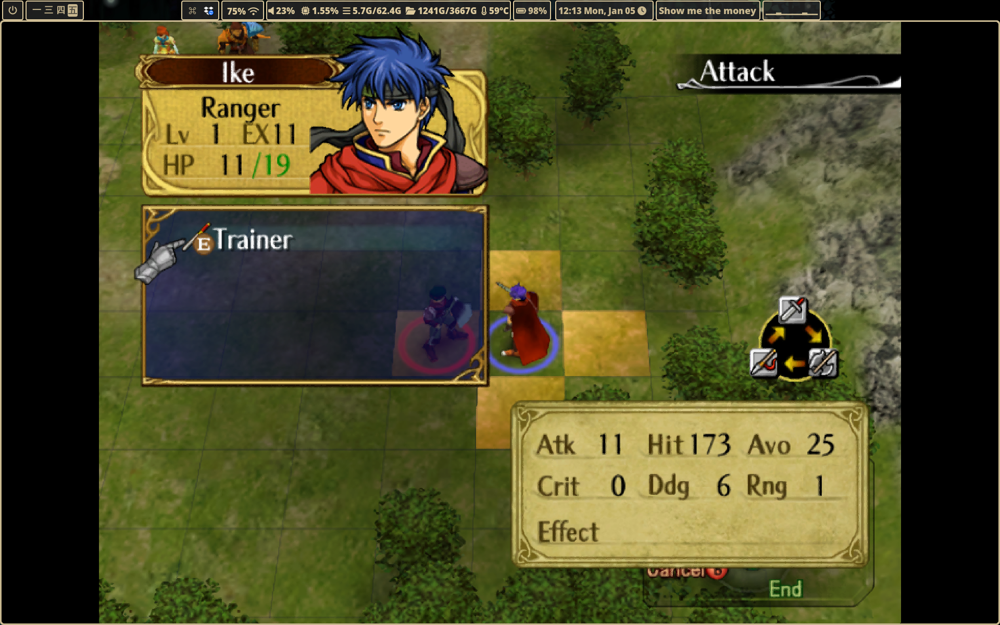
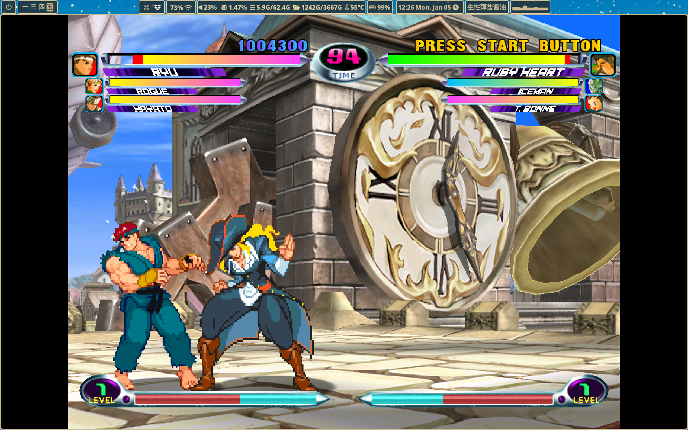
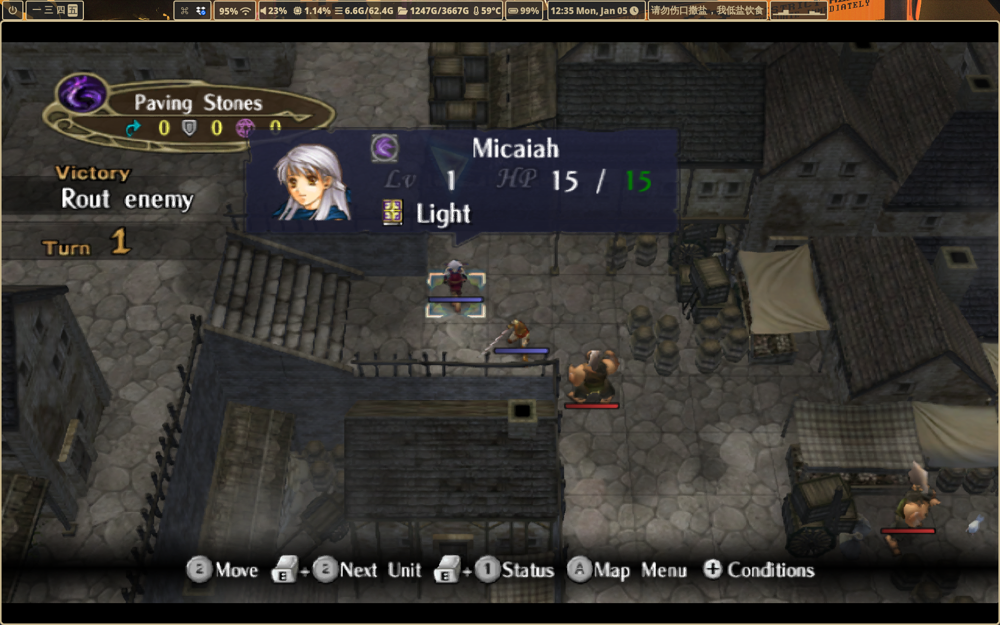

RetroArch复古游戏模拟器集成管理

RetroArch是很流行的老游戏模拟器管理前端。只要亿点设置就能舒服的使用。 此篇是按archlinux写的，但是其它系统可以参考。
基本安装和使用
archlinux下可以直接下载retroarch。
键盘控制在settings->input。其中retropad binds设置游戏操作键，hotkeys设 置菜单快捷键，包括存盘读盘，切换全屏，切换shader等等重要功能，记下来， 等会调试的时候需要用。
下载core，我直接去下arch包裹libretro-包裹名 字，有些地方说可以在 retroarch里面下，但我没有成功。按照不同的平台选core，不确定哪个更好就 都下了一个个试。
下载ROM就不说了，条条大路通罗马，下载不到就刷卡。
settings->video->output->video设置驱动，我选了gl，等会加shader会方便些。 有推荐vulkan的，如果相应shader能找到也可以。再深入就没研究了。
这样就能运行基本款了。retroarch玩游戏分两步，先加载核心再加载游戏。加 载核心：main menu->load core，按游戏平台选一个。加载游戏：load content， 选游戏ROM，可以修改start directory以后方便找。
到达这一步，游戏就能玩了。游戏打开后按F1进入快捷菜单，选择收藏，以后可 以用收藏游戏菜单快速访问。
显示优化
游戏中按f1可以进入快速菜单，这里也是修改测试shader（着色器）的入口。
基本款像素化严重，不喜欢的话需要加shader。有教材说在online updater里找， 但我装的不知道去了哪个文件夹，反正不是默认文件夹。所以还是走AUR装了 libretro-shaders-all-git，就能在/usr/share/libretro/shaders找到了，可 以从快捷菜单里读到。shaders->load preset，会自动进入上面的默认文件夹， 选scalefx->scalefx.glslp，回到游戏就是平滑的效果了。如果对这个shader满 意，就存成全局的：shaders->manage presets->save global preset。不满意 就换一个继续调整。很多shader其实不能用，估计是视频驱动匹配的问题，我至 今不知道valkan能用什么shader，还是gl容易匹配。
shader并不是加了就一定好，有些游戏，尤其是汉化的，加了反而糊，不如保留 原汁原味。这个时候hotkey就用上了，默认是用逗号键一键切换是否加shader。 不同游戏最适合的shader可能不一样，在quick menu->shaders->manage presets里勾选remember last used shader directory，方便调试。
主题可以改：设置->界面->外观->色彩主题。
中文化
默认情况下读中文文件名有小方块，需要改字体。只认ttf格式的字体，不认更
现代的ttc格式，我下载了wenquanyi的ttf文件，放到
/usr/share/fonts/TTF/里。放哪其实无所谓，让retroarch找到就行。重启
retroarch后就可以在选择文件的菜单里正确显示中文了。为了保险，我在
~/.config/retroarch/retroarch.cfg里把video_font_path也改成了中文字
体路径。测试了几个中文游戏，能成功运行。
手柄
适用八位堂手柄，其它未测试。
USB手柄：即插即用，但是要检查一下映射，比如左右摇杆就要手动加。
蓝牙手柄：用bluetoothctl匹配蓝牙，终端bluetoothctl进入控制台
> power on
> agent on
> default-agent
> scan on
# 稍等片刻，直到看到手柄被检测到
> scan off
> devices
# 此时应该看得到手柄的MAC地址，一堆数字，大写字母，冒号那个
> pair <MAC地址> # 匹配上
> trust <MAC地址> # 以后方便自动匹配
> connect <MAC地址>
蓝牙手柄连接成功后，终端跑bluetoothctl会显示。没有正确驱动还是无法识别， 我装了8bitdo-ultimate-controller-udev，game-devices-udev，重启电脑，就 可以了。读取游戏的时候会出现消息说没有设置，进去之后从快捷菜单修改按键 映射即可。可以根据不同的核心=游戏平台设置不同的映射，映射调整全部能在 retroarch里完成，教程很多就不赘述了。
连接第二个蓝牙手柄：幸运的是，可以如法炮制，不会有冲突。
连接电视：htmi连上后，可能需要手动切换外接，先用wlr-randr找到设备名， 再切换，比如
wlr-randr --output HDMI-A-3 --off
为了方便手柄操作，在快捷键设置里加上退出游戏的手柄映射。
wii: rvz格式不认，需要用dolphin-emu转化为iso
dc：整个文件夹都需要，加载gdi文件。gdi文件里应该有写需要哪些bin文件。
完成以上后，终于是个中古游戏前端完全体，可以横着走了。走去板砖，先不玩 游戏了。





